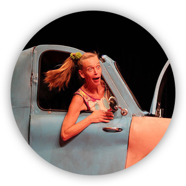

Spekken
Spekken stelt de culturele theaterwereld open voor peuters, kleuters en kinderen van 2 tot 12 jaar.
Het meest kakelbonte kinderfestival
Spekken stelt de culturele theaterwereld open voor peuters, kleuters en kinderen van 2 tot 12 jaar.
Een multifunctioneel centrum waar alle vormen en genres van theater, zang, dans en muziek een geschikte plaats vinden.
Meer over de Tinnenpot2 tot 6 jaar
29/12
2 tot 6 jaar
29/12
2 tot 6 jaar
29/12
2 tot 6 jaar
29/12
Waar kan een kind moeilijk aan weerstaan? Snoep! En in Gent noemen ze snoep 'spekken'. Spekken zijn niet alleen om van te smullen, maar je hebt ze in alle kleuren, vormen en maten. Ons kindertheaterfestival wil ook deze 'diversiteit' extra in de verf zetten. Enerzijds door het aanbod per leeftijd, anderzijds door de diverse genres.
Meer over SpekkenHoud onze Facebook pagina in de gaten en blijf op de hoogte van onze laatste nieuwtjes en acties!
Vandaag onze laatste spekkenvoorstelling van dit jaar: Joris en de geheimzinnige toverdrank van Theater De Kreet. Een bewerking naar het gelijknamige boek van Roald Dahl die dit jaar honderd zou zijn geworden en duidelijk nog niets van zijn aantrekkingskracht is verloren.